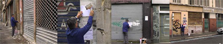

Plan de situation: Joliette
Till Roeskens – Frankreich 2006-2010 – 137 Min.
R+B+K+T: Till Roeskens – S: Christian Cuilleron,Till Roeskens – P: Batoutos, Nicolas Le Bras
DV – Französisch
Gentrifizierung in Marseille. La Joliette ist eines der schönsten Viertel in der Nähe des Alten Hafens. Im Zuge des Großprojekts "Euroméditerannée" rückte es in das Zentrum der Aufmerksamkeit von Investoren. Mit einem Gentrifizierungsplan, der in Europa seinesgleichen sucht, wurde die Grundlage für die Vertreibung der ortsansässigen Bevölkerung geschaffen: die kleinen Cafés und Läden der Nachbarschaft wurden geschlossen, Wohnungen luxussaniert, Gebäude abgerissen, Neubauten hochgezogen und Filialen großer Lifestyle-Marken eröffnet. Heute ist der Umbau des Viertels noch immer nicht abgeschlossen. Für die vielen leerstehende Wohnungen und Geschäfte fehlen noch immer finanzkräftige Käufer.

Till Roeskens, geb. 1974 in Freiburg, ist Künstler und Filmemacher. Er setzt sich mit Film, Video, Text und anderen Medien mit geographisch-polistischen Fragestellungen und mit dem Thema Raum und Städte auseinander. Er lebt und arbeitet in Marseille und Rom.
Filme (Auswahl): Pas loin de là 2002 – Leçon de choses : Rivesaltes 2005 – Videomappings : Aïda, Palestine 2008 (4.UX) – De la propriété 2009 – Plan de situation: Joliette 2010 – Un Archipel 2011